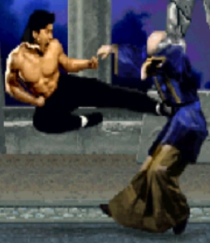

Street Fighter
vdzdvxsdgdszcdzcdszcdsddasfvgsxdfxsafsewafsdfsdsedsafvdsgfdfsewafsdfsdsedgsdfgsdfegdsdasdasfghdeda
Tekken
Mortal Kombat
Historia
La última oportunidad de Earthrealm en Mortal Kombat se llevó a cabo en la misteriosa isla de Shang Tsung. Los combatientes vinieron de todas partes. Liu Kang de la Sociedad del Loto Blanco. Johnny Cage, el actor que quería demostrarle al mundo que sus habilidades no eran solo efectos especiales y buena edición. Sonya Blade, miembro de las Fuerzas Especiales que busca atrapar a Kano. Sub-Zero, enviado en una misión para asesinar a Shang Tsung. Scorpion, de vuelta de la tumba, bajo la guía de Quan Chi, para vengarse de Sub-Zero. Raiden que estaba más como un guía para los defensores de Earthrealm y no se le permitió competir.
Durante el torneo, Scorpion se vengó de Sub-Zero y lo mató. Bi-Han, que era el nombre de Sub-Zero, renació en el Netherrealm como un ser muy parecido a Scorpion, solo que más siniestro, llamado Noob Saibot. Se convirtió en soldado de Quan Chi sin que Scorpion lo supiera.

De todos modos, Liu Kang subió de rango y derrotó tanto a Goro como a Shang Tsung. Johnny Cage, Sonya Blade y Kano detuvieron a un enfurecido Goro y Shang Tsung se retiró al Outworld dejando la isla para explotar, mientras que Liu Kang escapó con la ayuda de Kung Lao. Goro, Sonya Blade y Kano murieron aparentemente cuando la isla colapsó y Johnny Cage fue rescatado por Raiden.